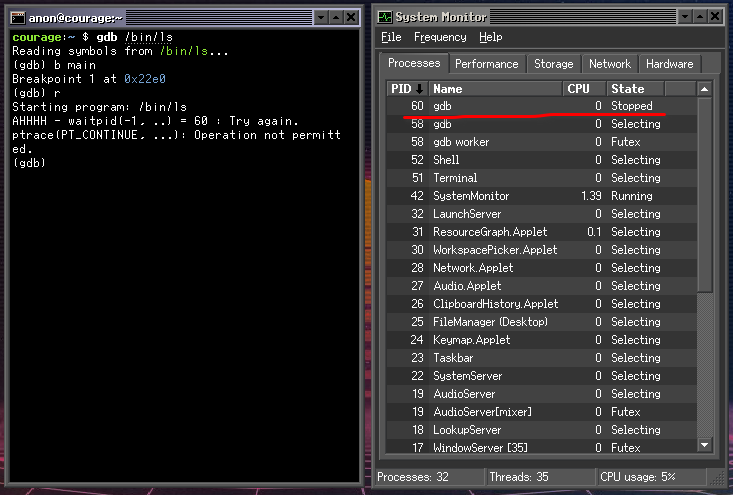

Porting GDB to SerenityOS
Introduction
While working on SerenityOS over the past few years, one of things I've missed the most is a powerful debugger. For whatever reason Andreas and most of the other developers working on the system don't seem to be fans using a debuggers. Now that I think about it, Andreas even has a video titled "Why I don't use a debugger" on his YouTube channel. 😁
Itamar Shenhar has been doing a bunch of work on Hack Studio,
and as part of that has implemented ptrace(..) and a basic debugger known as sdb (See PR #1885):
courage:~ $ sdb /bin/ls
Program is stopped at: 0x0bfae99d (Loader.so:ELF::DynamicLinker::linker_main() +0x5ed)
Source location: ./Userland/Libraries/LibELF/DynamicLinker.cpp:585
(sdb) help
Options:
cont - Continue execution
si - step to the next instruction
sl - step to the next source line
line - show the position of the current instruction in the source code
regs - Print registers
dis [number of instructions] - Print disassembly
bp <address/symbol/file:line> - Insert a breakpoint
bt - show backtrace for current thread
x <address> - examine dword in memory
(sdb) dis 1
0x0bfae99d <+0>:
The debugger integration with Hack Studio and the standalone sdb debugger are great first passes at some
basic debugging infrastructure. During my time at Microsoft I have learned to love the debugger for root
causing complicated systems level bugs and even learning how a complex program works, there's no better tool in my
humble opinion. I think I would be a lot more productive working on Serenity if I had a more powerful debugger,
like gdb. So I decided to port the GNU Project Debugger to SerenityOS!
Getting Things Compiling
The initial work to get the debugger to compile went smoothly. The work started in
PR #11278 - LibC+Ports: Add initial GDB 11.1 port.
I was able to quickly hack together build support for SerenityOS.
The gdb configure scripts were modified to enlighten them about the platform triplets (i386-pc-serenity, x86_64-pc-serenity),
@@ -0,0 +1,55 @@
diff --git a/bfd/config.bfd b/bfd/config.bfd
index 30087e3..11dc114 100644
--- a/bfd/config.bfd
+++ b/bfd/config.bfd
@@ -634,6 +634,11 @@ case "${targ}" in
targ_selvecs=
targ64_selvecs=x86_64_elf64_vec
;;
+ i[3-7]86-*-serenity*)
+ targ_defvec=i386_elf32_vec
+ targ_selvecs=
+ targ64_selvecs=x86_64_elf64_vec
+ ;;
#ifdef BFD64
x86_64-*-cloudabi*)
targ_defvec=x86_64_elf64_cloudabi_vec
@@ -694,6 +699,10 @@ case "${targ}" in
targ_selvecs=i386_elf32_vec
want64=true
;;
+ x86_64-*-serenity*)
+ targ_defvec=x86_64_elf64_vec
+ want64=true
+ ;;
#endif
i[3-7]86-*-lynxos*)
targ_defvec=i386_elf32_vec
Both the pthread_sigmask and the pthread signal APIs were then disabled in gdb since
they were not implemented in the system at the time.
diff --git a/gdbsupport/configure b/gdbsupport/configure
index a9dd02c..3c5bcf5 100755
--- a/gdbsupport/configure
+++ b/gdbsupport/configure
@@ -8934,7 +8934,7 @@ $as_echo "$gdb_cv_cxx_std_thread" >&6; }
# This check must be here, while LIBS includes any necessary
# threading library.
- for ac_func in pthread_sigmask pthread_setname_np
+ for ac_func in pthread_setname_np
do :
as_ac_var=`$as_echo "ac_cv_func_$ac_func" | $as_tr_sh`
ac_fn_cxx_check_func "$LINENO" "$ac_func" "$as_ac_var"
diff --git a/libiberty/configure b/libiberty/configure
index fffb91d..defc239 100755
--- a/libiberty/configure
+++ b/libiberty/configure
@@ -6478,7 +6478,9 @@ case "${host}" in
$as_echo "#define HAVE_SYS_ERRLIST 1" >>confdefs.h
$as_echo "#define HAVE_SYS_NERR 1" >>confdefs.h
-
+ ;;
+ *-*-serenity*)
+ $as_echo "#define HAVE_PSIGNAL 1" >>confdefs.h
;;
esac
The last thing holding us back from successfully compiling + linking gdb was that SerenityOS didn't implement tcsendbreak(..)
or tcdrain(..). Fortunately we didn't have to worry about supporting real terminals so a stub implementation
was sufficient for our purposes.
From 99061e7af4f8f698c40581134633163d53f25a09
From: Brian Gianforcaro <bgianf@serenityos.org>
Date: Thu, 16 Dec 2021 04:24:25 -0800
Subject: LibC: Stub out tcsendbreak(..) and tcdrain(..)
They are required for gdb to build.
---
Userland/Libraries/LibC/termios.cpp | 14 ++++++++++++++
Userland/Libraries/LibC/termios.h | 2 ++
2 files changed, 16 insertions(+)
diff --git a/Userland/Libraries/LibC/termios.cpp b/Userland/Libraries/LibC/termios.cpp
index a6ca21243087f..291dafa65940f 100644
--- a/Userland/Libraries/LibC/termios.cpp
+++ b/Userland/Libraries/LibC/termios.cpp
@@ -30,6 +30,13 @@ int tcsetattr(int fd, int optional_actions, const struct termios* t)
return -1;
}
+// https://pubs.opengroup.org/onlinepubs/009695399/functions/tcsendbreak.html
+int tcsendbreak([[maybe_unused]] int fd, [[maybe_unused]] int duration)
+{
+ // FIXME: Implement this for real.
+ return 0;
+}
+
int tcflow([[maybe_unused]] int fd, [[maybe_unused]] int action)
{
errno = EINVAL;
@@ -41,6 +48,13 @@ int tcflush(int fd, int queue_selector)
return ioctl(fd, TCFLSH, queue_selector);
}
+// https://pubs.opengroup.org/onlinepubs/009695399/functions/tcdrain.html
+int tcdrain([[maybe_unused]] int fd)
+{
+ // FIXME: Implement this for real.
+ return 0;
+}
+
speed_t cfgetispeed(const struct termios* tp)
{
return tp->c_ispeed;
diff --git a/Userland/Libraries/LibC/termios.h b/Userland/Libraries/LibC/termios.h
index 752a2c7cbadf2..3a2382c7b9da2 100644
--- a/Userland/Libraries/LibC/termios.h
+++ b/Userland/Libraries/LibC/termios.h
@@ -10,8 +10,10 @@
__BEGIN_DECLS
+int tcdrain(int fd);
int tcgetattr(int fd, struct termios*);
int tcsetattr(int fd, int optional_actions, const struct termios*);
+int tcsendbreak(int fd, int duration);
int tcflow(int fd, int action);
int tcflush(int fd, int queue_selector);
After putting all of these changes togeather we had the system building manually,
so we put together a package.sh file to automate compilation and installation of our gdb port:
#!/usr/bin/env -S bash ../.port_include.sh
port=gdb
version=11.1
useconfigure=true
configopts=("--target=${SERENITY_ARCH}-pc-serenity" "--with-sysroot=/" "--with-build-sysroot=${SERENITY_INSTALL_ROOT}" "--with-newlib" "--enable-languages=c,c++" "--disable-lto" "--disable-nls" "--enable-shared" "--enable-default-pie" "--enable-host-shared" "--enable-threads=posix")
files="https://ftpmirror.gnu.org/gnu/gdb/gdb-${version}.tar.xz gdb-${version}.tar.xz cccfcc407b20d343fb320d4a9a2110776dd3165118ffd41f4b1b162340333f94"
makeopts+=("all")
installopts=("DESTDIR=${SERENITY_INSTALL_ROOT}")
depends=("gmp" "binutils")
auth_type="sha256"
# We only have a stub of getrusage(..)
export ac_cv_func_getrusage=no
# We don't support the madvise options that are used.
export ac_cv_func_madvise=no
Much to my surprise, after building and installing the port, it actually kind of ran the first time I tried it!

As you can see the program does't seem to actually run, it just halts.
Bonus Bug: Kernel Process Name after PT_TRACE_ME
After the initial port was compiling I started to debug what was wrong with out implementation that was
causing gdb to hang. If you looked at the processes under System Monitor you can see see that we have
two processes named gdb, one sitting Suspended, and one sitting Selecting which is serenity's way
of indicating a process is waiting for something.

diff --git a/Kernel/Syscalls/ptrace.cpp b/Kernel/Syscalls/ptrace.cpp
index 26d5d92e71..016007f97f 100644
--- a/Kernel/Syscalls/ptrace.cpp
+++ b/Kernel/Syscalls/ptrace.cpp
@@ -20,6 +20,7 @@ static ErrorOr<FlatPtr> handle_ptrace(const Kernel::Syscall::SC_ptrace_params& p
{
SpinlockLocker scheduler_lock(g_scheduler_lock);
if (params.request == PT_TRACE_ME) {
+ dbgln("PT_TRACE_ME - caller({}) ", caller.pid());
if (Process::current().tracer())
return EBUSY;
@@ -49,6 +50,7 @@ static ErrorOr<FlatPtr> handle_ptrace(const Kernel::Syscall::SC_ptrace_params& p
auto& peer_process = peer->process();
if (params.request == PT_ATTACH) {
+ dbgln("PT_ATTACH - peer({}) caller({}) ", peer_process.pid(), caller.pid());
if (peer_process.tracer()) {
return EBUSY;
}
@@ -62,8 +64,10 @@ static ErrorOr<FlatPtr> handle_ptrace(const Kernel::Syscall::SC_ptrace_params& p
auto* tracer = peer_process.tracer();
- if (!tracer)
+ if (!tracer) {
+ dbgln("ptrace - peer({}) has no tracer!", peer_process.pid());
return EPERM;
+ }
if (tracer->tracer_pid() != caller.pid())
return EBUSY;
@@ -75,20 +79,24 @@ static ErrorOr<FlatPtr> handle_ptrace(const Kernel::Syscall::SC_ptrace_params& p
switch (params.request) {
case PT_CONTINUE:
+ dbgln("PT_CONTINUE - peer({}) caller({}) ", peer_process.pid(), caller.pid());
peer->send_signal(SIGCONT, &caller);
break;
case PT_DETACH:
+ dbgln("PT_DETACH - peer({}) caller({}) ", peer_process.pid(), caller.pid());
peer_process.stop_tracing();
peer->send_signal(SIGCONT, &caller);
break;
case PT_SYSCALL:
+ dbgln("PT_SYSCALL - peer({}) caller({}) ", peer_process.pid(), caller.pid());
tracer->set_trace_syscalls(true);
peer->send_signal(SIGCONT, &caller);
break;
case PT_GETREGS: {
+ dbgln("PT_GETREGS - peer({}) caller({}) ", peer_process.pid(), caller.pid());
if (!tracer->has_regs())
return EINVAL;
auto* regs = reinterpret_cast<PtraceRegisters*>(params.addr);
@@ -97,6 +105,7 @@ static ErrorOr<FlatPtr> handle_ptrace(const Kernel::Syscall::SC_ptrace_params& p
}
case PT_SETREGS: {
+ dbgln("PT_SETREGS - peer({}) caller({}) ", peer_process.pid(), caller.pid());
if (!tracer->has_regs())
return EINVAL;
@@ -114,16 +123,19 @@ static ErrorOr<FlatPtr> handle_ptrace(const Kernel::Syscall::SC_ptrace_params& p
}
case PT_PEEK: {
+ dbgln("PT_PEEK - peer({}) caller({}) ", peer_process.pid(), caller.pid());
auto data = TRY(peer->process().peek_user_data(Userspace<const FlatPtr*> { (FlatPtr)params.addr }));
TRY(copy_to_user((FlatPtr*)params.data, &data));
break;
}
case PT_POKE:
+ dbgln("PT_POKE - peer({}) caller({}) ", peer_process.pid(), caller.pid());
TRY(peer->process().poke_user_data(Userspace<FlatPtr*> { (FlatPtr)params.addr }, params.data));
return 0;
case PT_PEEKBUF: {
+ dbgln("PT_PEEKBUF - peer({}) caller({}) ", peer_process.pid(), caller.pid());
Kernel::Syscall::SC_ptrace_buf_params buf_params {};
TRY(copy_from_user(&buf_params, reinterpret_cast<Kernel::Syscall::SC_ptrace_buf_params*>(params.data)));
// This is a comparatively large allocation on the Kernel stack.
@@ -142,11 +154,13 @@ static ErrorOr<FlatPtr> handle_ptrace(const Kernel::Syscall::SC_ptrace_params& p
}
case PT_PEEKDEBUG: {
+ dbgln("PT_PEEKDEBUG - peer({}) caller({}) ", peer_process.pid(), caller.pid());
auto data = TRY(peer->peek_debug_register(reinterpret_cast<uintptr_t>(params.addr)));
TRY(copy_to_user((FlatPtr*)params.data, &data));
break;
}
case PT_POKEDEBUG:
+ dbgln("PT_POKEDEBUG - peer({}) caller({}) ", peer_process.pid(), caller.pid());
TRY(peer->poke_debug_register(reinterpret_cast<uintptr_t>(params.addr), params.data));
return 0;
default: